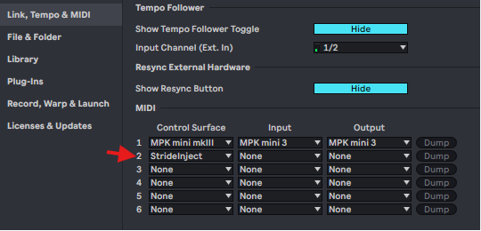
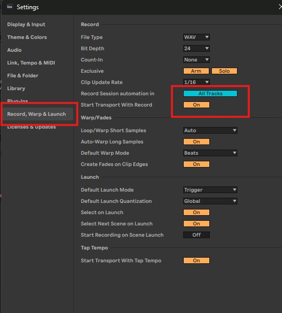
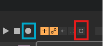
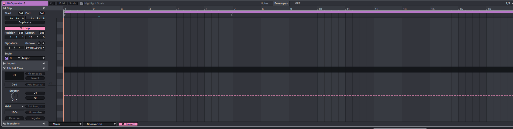
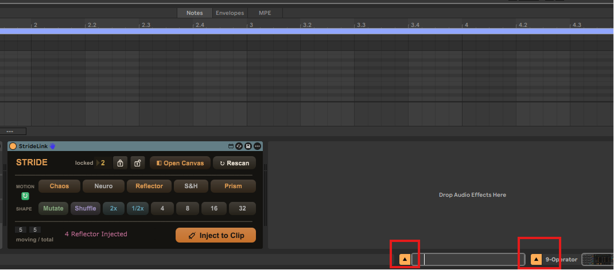

Install once, map the knobs you want to move, then generate and inject straight into your clip. Here is the whole flow, start to finish.
The first time you open Stride, this window pops up. Click Install to Ableton. It installs both the StrideLink device and the StrideInject engine into your User Library.
Stride drops its Max device (StrideLink) into your Ableton User Library. It then shows up in Ableton's browser under User Library → Stride.
In Ableton, open Settings → Link, Tempo & MIDI, find Control Surface, and choose StrideInject. This is what lets Stride write automation into your clips.

Set these two once so Stride reliably captures the parameters you map and writes automation on every track. Open Settings → Record, Warp & Launch and match these:

Drop the StrideLink device onto the track that holds your instrument rack.
Click Record, then move the parameters you want to modulate. Stride maps them in as lanes automatically. Either view works: the blue button is Record for Arrangement, the red is Record for Session. It's the same button you use to add more later.

In Ableton, double-click the MIDI clip you want so it opens in the Detail view. That is exactly where Stride writes.

Hit a motion tool (Chaos, Neuro, Reflector, S&H, Prism) to lay down modulation across every lane at once. Reshape or Mutate until it feels right, then hit Inject to Clip. Stride writes the curves straight into your selected clip. No file, no drag, no export.
Hit play and listen. When it sounds right, record the take. The automation lives with the clip, so Stride's job is done.
Map more params the same way (the button from Step 2), they auto-appear in Stride, draw curves, then Inject to Clip again. The new params join the modulated chain. No re-setup, no re-scan.
Stride works on the timeline too. First, turn ON the two arrows at the bottom of the track (circled below) so the rack and the clip's envelopes are reachable. Double-click to create a MIDI clip, or if it already exists, make sure it's the selected clip in the Detail view. Then modulate with Stride and Inject to Clip. The automation appears right on your timeline.

Stuck? Get help.
Watch the full walkthrough with voiceover, or book a free 30-minute call and we'll get you rolling. No question is too small.